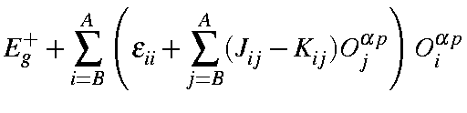
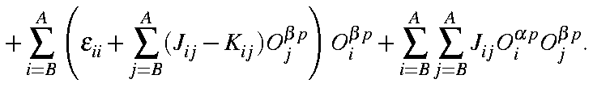

<Ya |H|Yb>
| = |  | |
|  |


All other matrix elements are zero. The completed secular determinant is then diagonalized. This yields the state vectors and state energies, relative to the starting configuration. In turn, the state vectors can be used to generate spin density (at the RHF level) for pure spin states. If the density matrix for the state is of interest, such as in the calculation of transition dipoles for vibrational modes of excited or open shell systems, or for other use, the perturbed density matrix is reconstructed.